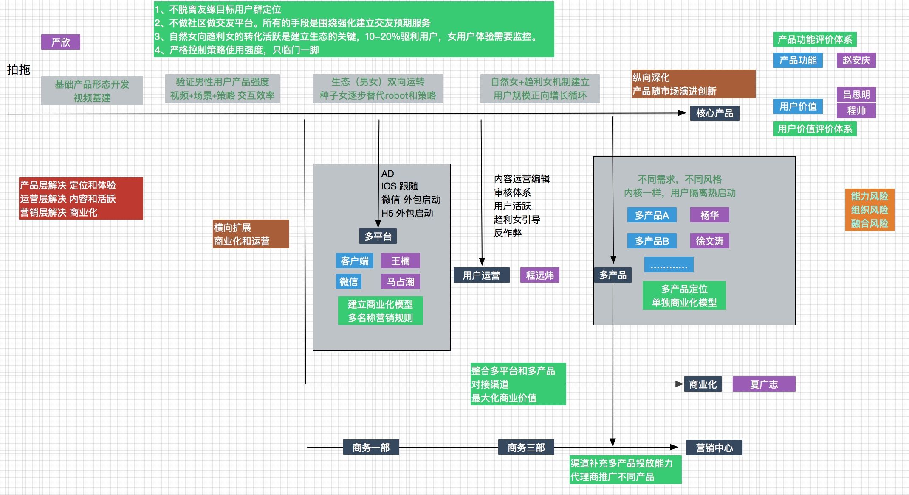

项目进展
项目进度正常，下周一或二可以发布第一期的版本。 基本功能实现（照片电影还需要一周），搭配了最基础的策略。下周将在公司小范围发布版本，并通过500个自制用户进入内测期，以验证此版本的基础运营效率。
新产品部门目标
业务目标
一. 领先社交产品
基础亮点功能，打造用户最低成本发布优质内容（视频或图片），小同学于佳鑫将持续进行此功能的不断打磨，形成产品亮点（尤其是女用户）。
最大化提供用户交友可能性
当前的路径以围绕持续提升女性用户体验作为出发点。 具体参考指标还待讨论。建立用户运营体系，真正让用户能留在平台，增强业务的健康度和后续发展空间。
驱利种子用户的体系搭建，远炜对这一块信心满满，且补充了一名对这块有经验的同事。
二. 接盘子（arpu、多平台）
这块能力友缘相对较强的能力，前期严欣和王楠的配合应该问题不大，关键点在于对策略强度的控制。
多平台步骤：
1. 微信版本通过人力外包（2人2月）进行同步开发。
2. iOS将会延后android一个月的进度往前推进。
三. 垄断市场（多产品）
目前还在思考阶段，下面的两个思路还没有确定。
- 建立不同需求的新形态的产品，通过成熟用户运营体系，热启动建立新的产品。
- 新业务部门的经验如果成立，启用新的团队打造新的产品。
对于有缘网的思考
有缘网怎么弄，首先还是得厘清目标，有缘网在整个『婚恋+社交』品类中的角色定位是什么？『品牌担当』还是『收入支柱』？如果是品牌担当，品牌如何作用于整条业务链？
目前还在思考中，无明确答案。
组织目标
将团队建设成高战斗力，建立自发展的组织。
通过组织生活会和中层聊天，目前在新业务部门存在两个比较大的问题，也正在着手解决：
小同学思想建设问题
中层在往小同学传达的时候，没有通过愿景的方式传达，而是直接赤裸的方式，使得小同学们对现有的业务规划和自身的作用不是很了解。
从本周开始，拟从以下几点来解决：
- 借月底版本发布之机，对新业务和开发三部发一封全员的邮件，一是表示感谢，二是宣传业务和组织的愿景，三是回答一些小朋友的疑惑（组织生活会后应该有些反馈）
- 在组织内部会加强和小同学的互动，让他们感受到被关怀。
中层干部AB两面的隔阂仍旧存在
通过了解，中层基本都是一心为业务着想，分歧主要还会在执行的方式方法上。组织团建活动，创造环境，让大家把心里话说出来，达成思想统一。
